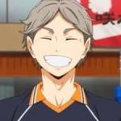

Sugawara Koushi

Sugawara Koushi(스가와라 코우시) was previously a third-year at Karasuno High School;
for the majority of the series,
he was the vice-captain and substitute setter for the volleyball team.
As of 2018, he is an Elementary School teacher in Miyagi.
Appearance
Sugawara is shown to be average in height with a slender build.
He has slightly thick eyebrows,
light grey hair and hazel-brown eyes with a birthmark mole under his left eye.
He is usually seen with a gentle smile on his face.